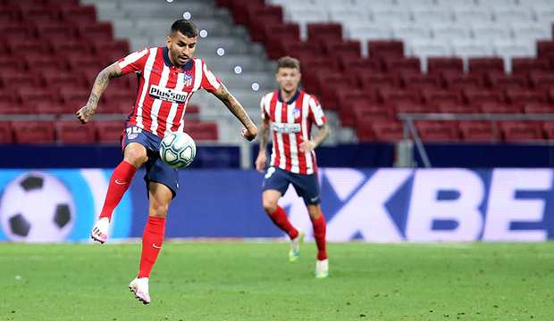
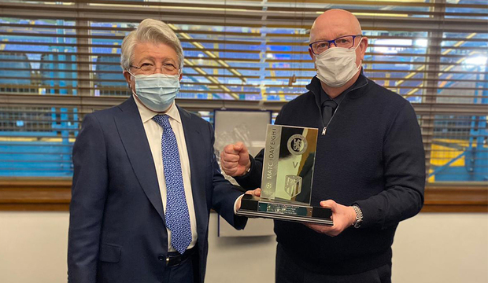

PRIMER EQUIPO
Recibimos al conjunto vitoriano este domingo en el Wanda Metropolitano en la vigesimoctava jornada de LaLiga (18:30 horas).
Nuestro equipo recibe la visita del Deportivo Alavés en el Wanda Metropolitano, este domingo 21 de marzo, a las 18:30 horas, en el encuentro correspondiente a la vigesimoctava jornada de LaLiga. El colegiado designado para impartir justifica durante el choque será el valenciano Martínez Munuera.
Los rojiblancos liderando la tabla clasificatoria con 63 puntos, tras la última victoria como locales frente Athletic Club y el empate a domicilio ante el Getafe en el Coliseum Alfonso Pérez. Los de Simeone vencieron en el partido de ida al Alavés, diputado en el Estadio de Mendizorroza, con goles de Marcos Llorente (40') y de Luis Suárez (89') en los trazos finales del partido (1-2). De los 11 partidos que hemos disputado frente al Alavés como locales en competición liguera, solo en uno de ellos nos quedamos sin marcar. En cambio, cosechamos un total de 29 tantos a favor entre todos ellos.
El Deportivo Alavés, ocupa la decimoctava posición con 23 puntos en su casillero. En su último compromiso disputado empataron frente al Cádiz en Vitoria (1-1). El conjunto dirigido por Abelardo Fernández busca colocarse en los puestos de salvación de cara a la recta final del campeonato, contando con Joselu y Lucas Pérez, como máximos artilleros del equipo con seis y cuatro dianas respectivamente.

2020 ha sido un año complicado, pero siempre hemos sabido que contamos con los nuestros para disfrutar de momentos juntos. Por eso, Plus500 está regalando 20 lotes de 2 camisetas, para que disfrutes de nuestros partidos con esa persona especial. Sólo tienes que etiquetar a tu amigo y seguir a Plus500.Isidro
El club impuso la insignia de Oro y Brillantes a Isidro García
21 de febrero, 2021 - 15:14
El socio número 149 de nuestro club, en el cual se dio de alta el 4 de agosto de 1955, recibió un merecido homenaje por sus 65 años de antigüedad ininterrumpida como socio.Ria esp
El Atlético de Madrid y Ria Money Transfer amplían su acuerdo de patrocinio hasta 2024
19 de febrero, 2021 - 10:25
El Atlético de Madrid y la compañía líder mundial en envíos de dinero renuevan su alianza por una temporada más. Para celebrarlo, RIA lanza un spot en el que aparecen varios de nuestros jugadores (Lemar, Luis Suárez, Kondogbia y Herrera) y que representa, a través de la historia real de superación de Wizarchy, algunos de los valores que compartimos ambas entidades como son el tesón, el trabajo diario o no darse nunca por vencido.La segunda etapa del Atlético comienza en O´Donnell
Se cumplen 108 años de la inauguración del Campo de O'Donnell
9 de febrero, 2021 - 10:29
El 9 de febrero de 1913 se jugó el primer partido en este campo, situado en la calle Narváez, ante el Athletic Club.
Comunicado oficial
6 de febrero, 2021 - 17:27
BH 1
BH Fitness, nuevo proveedor oficial del Atlético de Madrid
3 de febrero, 2021 - 10:51
El fabricante de equipamiento fitness aportará máquinas de gimnasio y material fitness para cubrir las necesidades de los primeros equipos masculino y femenino, así como de los conjuntos de la Academia.Once primer título
Se cumple un siglo de nuestro primer título
23 de enero, 2021 - 11:04
El 23 de enero de 1921, el Athletic Club de Madrid conquistó el primer título de la historia de la entidad: el Campeonato Regional del Centro.Once primer título
Se cumplen 100 años de nuestro primer título
23 de enero, 2021 - 8:00
El 23 de enero de 1921, el Athletic Club de Madrid conquistó el primer título de la historia de la entidad: el Campeonato Regional del Centro.rojiblanca
Cumplimos 110 años vestidos de rojiblanco
22 de enero, 2021 - 14:27
El 22 de enero de 1911, el Athletic Club de Madrid estrenó los nuevos colores frente a la Sociedad Gimnástica Española.